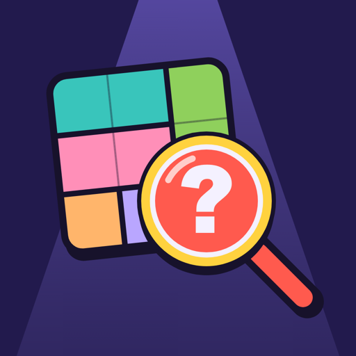

Privacy Policy
Suspect Grid · Last updated 13 November 2026
No accounts. We don't collect your data.
Suspect Grid is a single-player logic puzzle game made by Barışcan Demirel. It has no accounts and we, the developer, do not collect or receive any personal data.
What stays on your device
So the game can remember your progress, the following is stored only on your device:
- which cases you have solved, your daily-case streak and your best Case Rush score,
- the notes you write in the detective's notebook,
- your language choice and whether sound effects are on,
- whether you have seen the tutorial and whether you have removed ads.
This information never leaves your device and is deleted when you delete the app.
Ads
The free version shows a full-screen ad from Google AdMob after you finish a case, never in the middle of one. To show ads, limit how often you see them and measure them, Google may collect:
- your device's advertising identifier: on iPhone and iPad the IDFA, only if you allow tracking when the app asks; on Android the Google advertising ID,
- your IP address and an approximate location derived from it,
- device and app information (such as model, operating system and language),
- how you interact with ads.
In the European Economic Area, the United Kingdom and Switzerland, you are asked for consent before any ad is personalized. On iPhone and iPad you can change the tracking permission at any time in Settings → Privacy & Security → Tracking. On Android you can reset or delete your advertising ID in Settings → Google → Ads (or Settings → Privacy → Ads). How Google uses this data.
Remove ads
If a one-time "Remove ads" purchase is offered, it is handled by the App Store or Google Play. We never see your payment details; the app only stores on your device that ads have been removed. "Restore purchases" asks the store whether you bought it before.
Internet
The puzzles work offline. The app goes online only to load ads and to talk to the App Store or Google Play about purchases.
Sharing
When you tap Share, the app opens your device's standard share sheet with a short text about your result. Nothing is sent unless you choose where to share it.
Children
The app is not directed at children under 13 and does not knowingly collect information from them.
Changes
If this policy changes, this page will be updated before the new version is released.
Contact
Email bariscandemirel35@gmail.com or visit the support page.
Hesap yok. Verilerini toplamıyoruz.
Suspect Grid, Barışcan Demirel tarafından geliştirilen tek oyunculu bir mantık bulmacası oyunudur. Uygulamada hesap yoktur; geliştirici olarak hiçbir kişisel veri toplamıyor ve almıyoruz.
Cihazında kalanlar
Oyunun ilerlemeni hatırlayabilmesi için aşağıdakiler yalnızca cihazında saklanır:
- hangi vakaları çözdüğün, günlük vaka serin ve seri koşudaki en iyi skorun,
- dedektif defterine yazdığın notlar,
- dil seçimin ve ses efektlerinin açık olup olmadığı,
- öğreticiyi görüp görmediğin ve reklamları kaldırıp kaldırmadığın.
Bu bilgiler cihazından hiçbir zaman çıkmaz ve uygulamayı sildiğinde silinir.
Reklamlar
Ücretsiz sürüm, bir vakayı bitirdiğinde Google AdMob tarafından sağlanan tam ekran bir reklam gösterir; vakanın ortasında asla reklam çıkmaz. Reklamları göstermek, sıklığını sınırlamak ve ölçmek için Google şunları toplayabilir:
- cihazının reklam kimliği: iPhone ve iPad'de IDFA, yalnızca uygulama sorduğunda takibe izin verirsen; Android'de Google reklam kimliği,
- IP adresin ve ondan çıkarılan yaklaşık konum,
- cihaz ve uygulama bilgileri (model, işletim sistemi, dil gibi),
- reklamlarla nasıl etkileşime geçtiğin.
Avrupa Ekonomik Alanı, Birleşik Krallık ve İsviçre'de reklamlar kişiselleştirilmeden önce onayın istenir. iPhone ve iPad'de takip iznini istediğin zaman Ayarlar → Gizlilik ve Güvenlik → Takip bölümünden değiştirebilirsin. Android'de reklam kimliğini Ayarlar → Google → Reklamlar (ya da Ayarlar → Gizlilik → Reklamlar) bölümünden sıfırlayabilir veya silebilirsin. Google bu verileri nasıl kullanıyor.
Reklamları kaldır
Tek seferlik "Reklamları kaldır" satın alımı sunulduğunda App Store ya da Google Play tarafından yürütülür. Ödeme bilgilerini hiçbir zaman görmeyiz; uygulama yalnızca reklamların kaldırıldığını cihazında saklar. "Satın alımları geri yükle", daha önce satın alıp almadığını mağazaya sorar.
İnternet
Bulmacalar internetsiz çalışır. Uygulama yalnızca reklam yüklemek ve satın alma için App Store ya da Google Play ile konuşmak üzere internete bağlanır.
Paylaşım
Paylaş düğmesine bastığında uygulama, sonucunla ilgili kısa bir metinle cihazının standart paylaşım penceresini açar. Nereye paylaşacağını sen seçmedikçe hiçbir şey gönderilmez.
Çocuklar
Uygulama 13 yaşından küçük çocuklara yönelik değildir ve bilerek onlardan bilgi toplamaz.
Değişiklikler
Bu politika değişirse, bu sayfa yeni sürüm yayımlanmadan önce güncellenir.
İletişim
bariscandemirel35@gmail.com adresine yaz ya da destek sayfasına bak.